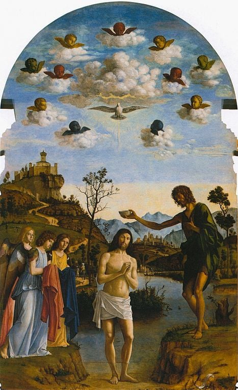
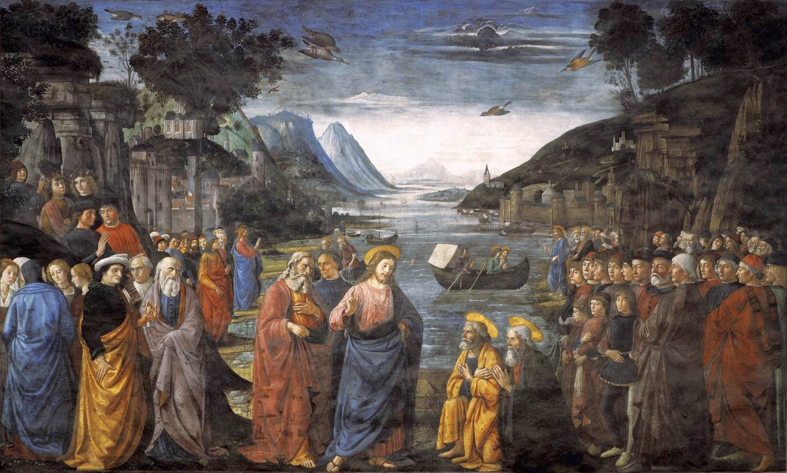

耶稣和神的国

- 四福音书中多次强调，这是耶稣传道与教导的绝对核心（可1:15：“日期满了，神的国近了！”）
- 名字与概念的内涵：“神的国”（Kingdom of God）首先是神的主权、王权与统治，神的子民，以及最终被基督更新的创造界。
- 贯穿圣经的深层冲突： 这不是神与撒但两个同等国度的二元对抗，而是至高神的王权对邪恶势力、罪、死亡与撒但权势的审判与得胜（创3:15）。
- 神国主题的框架： 强调神国“已然与未然”（Already and Not Yet）的末世论阶段
- 理解“神的国”是理解整本新约圣经以及耶稣救赎工作的其中一把钥匙
温习（旧约对神国的期盼）

- 但因始祖堕落，人类陷入罪和死亡
- 旧约以色列在圣约、律法、圣殿与大卫王位中预表神在地上的王权治理；但因百姓和君王持续背约，国家分裂、北国灭亡、南国被掳、圣殿被毁。
- 众先知（如以赛亚、但以理）在黑暗中宣告复兴的预言：神必亲自降临，差遣弥赛亚建立永不败坏的国度
- 读：以赛亚书 52:7（“你的神作王了！”）
耶稣的背景与生平

- 历史背景： 以色列人在罗马帝国压迫下，犹太人强烈期盼一位政治与军事上的弥赛亚来推翻统治，恢复大卫的王朝(约翰福音 6:14-15,使徒行传 1:6)。
- 受膏者显明： 耶稣道成肉身，由施洗约翰预备道路；祂在约旦河受洗时，父神宣告、圣灵降临，显明耶稣是受膏者基督，祂以先知、祭司、君王的身份展开救赎使命。
- 海德堡要理第31问： 基督受膏成为我们最高的先知、唯一的大祭司、永远的君王。
福音书神国教导的双重与交错维度

- 属地与属天： 耶稣透过属地的事物（如撒种、芥菜种、面酵的比喻），来启示属天国度的奥秘。
- 属灵与实体： 神国现在不是以政治疆界、军事力量或地上政权的形式出现，而是基督借着圣道与圣灵在人心、教会和世界中真实掌权；但它并非只是抽象观念，最终将在基督再来和新天新地中完全、可见地成全。
- 内在生命的反转： 世俗的眼光期待外在的军事革命，但耶稣启示神国是从内部的生命反转开始。
- 现在与未来： 神国借着耶稣的医病赶鬼已经真实降临（太12:28），但其最终的荣耀与审判仍需等待人子在荣耀中降临的时刻。
耶稣教导神国的中心信息

- 神的主动与恩典： 神国不是靠个人的律法行为赚取的，而是神主动寻找、拯救失丧的人（路15章浪子的比喻）
- 价值观： 做大的要服事小的、贫穷的得福、要爱仇敌（《登山宝训》）
- 神国的大能： 借着神迹奇事（路11:20），证明罪、死亡与撒但权势在至高君王面前退败，也显明神国大能已经在基督里真实临到。
- 最终的成全： 神国目前如隐藏的面酵，但最终必将完全显露，带来终极的审判与新天新地
第一部分：呼召门徒与国度的群体
- 故事重温： 耶稣在加利利海边行走，呼召了正在打鱼的彼得、安得烈、雅各、约翰，以及税关上的税吏马太（太4:18-22；可1:16-20）。他们立刻舍网、撇下船和父亲跟从了主。
- 呼召的绝对性（王权彰显）： 君王的呼召带着绝对的权柄，门徒的“立刻跟从”表明神国的价值超越了地上的一切职业、财富与亲属关系。
- 身份的翻转与使命： 耶稣说“我要叫你们得人如得鱼一样”。门徒被拣选成为新以色列的代表（十二使徒），被赋予天国大使的使命与权柄，去传讲福音、医病赶鬼。
- 教会群体的意义： 神国不是单打独斗的个人修练，而是君王亲自在地上招聚祂的子民，建立一个全新的盟约群体。
- 成为神国子民： 凡真实悔改信靠耶稣基督的人，都能成为神国的子民。
第二部分：神国的三个阶段（末世启示）
- 1. 开启（Inauguration）： 借着耶稣的降生、受死与复活，神的国开展，基督已经胜过罪、死亡与撒但权势。
- 2. 扩张： 借着圣灵的工作、圣道的宣讲，门徒将福音广传万国。
- 3. 成全（Consummation）： 基督第二次再来时，将审判并终结一切敌挡神的骄傲权势，消灭罪与死亡，使神国完全实现。
神国与十字架的理解

- 耶稣在十字架上的受死绝非神国的失败，而是君王得胜的最高彰显。
- 代赎： 基督在十字架上为祂的百姓代受刑罚，满足神公义的要求，使罪得赦免。
- 称义： 因着基督完全的义归算给信徒，凡凭信心与基督联合的人在神面前被宣判为义。
- 得胜： 基督借着十字架胜过执政掌权者，并把他们明明地羞辱（西2:15）。
- 教会不完全等同于神国；教会是神国的可见群体与初熟果子，但神国的范围最终指向基督完全更新万有。
- 西敏小要理问答第26问指出，基督执行君王的职分，是使我们归服祂，治理并保护我们，又抑制并胜过祂和我们的一切仇敌。
- 海德堡要理第123问提醒我们，“愿你的国降临”是求神借着圣道与圣灵管理我们，保守并增长祂的教会，毁坏魔鬼的作为，直到国度完全成全。
神的国度中的“人子”与君王主题

- 耶稣对《但以理书》的成全： 耶稣是那块“非人手凿出的石头”，祂来要审判并终结一切敌挡神的骄傲权势，并使万国中属祂的百姓归向基督，进入祂充满天下的永恒国度。
- 人子（The Son of Man）主题： 耶稣最常使用的自称。祂明确宣告自己就是《但以理书》第7章中那位驾着天云而来，得着权柄、荣耀、国度，并与亘古常在者同掌王权的君王。
- 降卑与高升： 祂借着降卑为“受苦的仆人”成就救赎，最终被神高举在天上掌权。
新约如何印证神国的生活
- 圣灵是我们得基业的凭据。
- 门徒与信徒已经被“救拔出黑暗的权势，迁到祂爱子的国里”（西1:13）。
- 基督徒被呼召在地上作天国的子民，带着君王赋予的使命，呼召世人悔改进入神的国。
应用
- 神掌权： 将主权完全交托给神。
- 使看不见的国度彰显（加尔文）： 教会借着信徒在工作、家庭、学校，甚至金钱使用上的生活见证，显明基督真实作王；在基督再来以前，神国在世上的彰显，正是透过天国子民顺服君王的生活。
- “先求祂的国和祂的义”（太6:33）。
- 承担福音的使命： 认识到我们不仅是蒙恩得救的罪人，更是被赋予使命的福音使者。
- 满怀盼望的忍耐： 面对世俗的逼迫、疾病或动荡，深知黑暗权势已被击溃，带着盼望等候王国的最终成全。
结论
- 耶稣基督就是那位应许的君王，祂的到来标志着神国的降临。
- 神国首先是神在基督里彰显的王权与统治；凡被祂招聚、更新并甘心顺服祂的人，就是这国度的子民。
- 神国已经在基督的第一次降临、十字架与复活中开启；但其完整结果要等到基督再来时才完全显明。
- 神国超越万国：地上一切政权、文化与制度都不是永久的，惟有神的国度永远长存。
- 将来的盼望:当基督（人子）再来时，祂将审判一切敌挡神的权势，并建立充满公义、和平的新天新地。
讨论问题
- 耶稣呼召门徒时，他们“立刻舍了网跟从他”。在你的生活中，有什么“网”（世俗的追求、安全感、关系）是你觉得最难撇下交给主的？
- 耶稣教导的“天国价值观”（如做大的要服事小、爱仇敌）与当今世俗社会的价值观有哪些最强烈的冲突？这对你的职场或生活有什么具体挑战？
- 知道耶稣已经在十字架上作王掌权，并且呼召我们参与祂“得人”的使命，这如何改变我们面对现今世界动荡、逼迫或个人苦难时的态度？
References
- Ligonier, “The Kingdom of God”
- Ligonier, “The Gospel of the Kingdom”
- R.C. Sproul / Ligonier, “A Kingdom That Cannot Be Shaken”
- The Gospel Coalition, “Kingdom of God”
- 海德堡要理问答第31问、第123问；西敏小要理问答第26问
- Domenico Ghirlandaio, “Vocation of the Apostles,” Wikimedia Commons